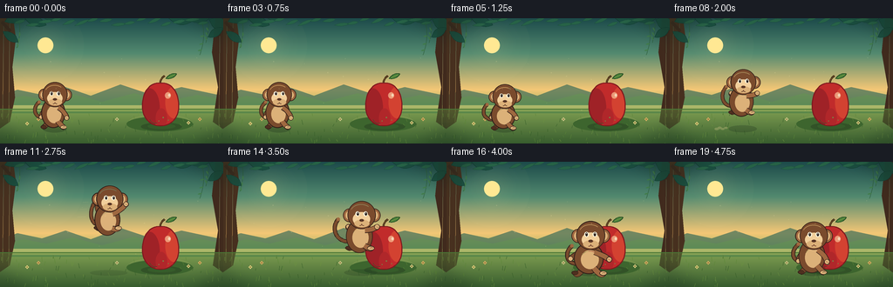
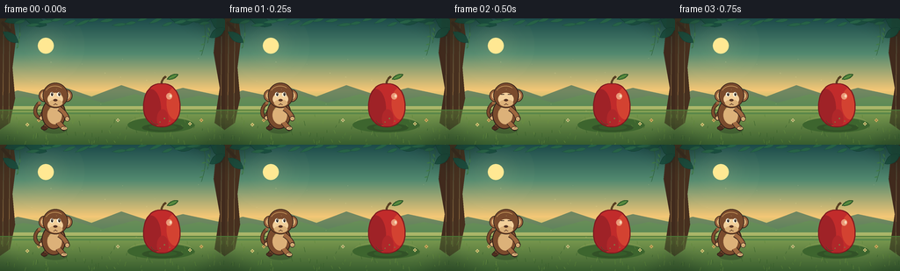
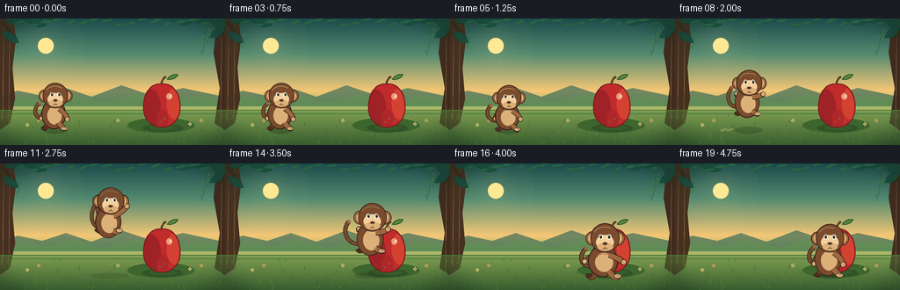

CODING AGENTS AS PIXEL WORLD MODELS
traex/DeepSeek-V4.1-Flash · dynamic_spatial_relationship_0056
点击播放 · 原生 RGB 像素
逐轮保存的候选
回放视频、检查图与代码变化。
每份候选均可单独播放。实际图片检查记录在下方工具轨迹中。
候选 01播放与检查图
点击播放 · 原生 RGB 像素


展开代码变化
--- 上一保存版本
+++ 本次保存版本
@@ -0,0 +1,601 @@
+from __future__ import annotations
+
+import math
+import random
+from pathlib import Path
+
+import numpy as np
+from PIL import Image, ImageDraw, ImageFilter
+
+import artifact_io
+
+
+WIDTH = 256
+HEIGHT = 144
+FPS = 4
+FRAMES = 20
+SS = 4
+CANVAS_W = WIDTH * SS
+CANVAS_H = HEIGHT * SS
+
+INK = (48, 31, 25, 255)
+FUR_DARK = (79, 47, 31, 255)
+FUR = (122, 75, 45, 255)
+FUR_LIGHT = (159, 104, 64, 255)
+TAN = (220, 177, 121, 255)
+TAN_LIGHT = (242, 207, 155, 255)
+APPLE_DARK = (126, 26, 31, 255)
+APPLE_RED = (193, 43, 43, 255)
+APPLE_LIGHT = (234, 86, 56, 255)
+
+
+def px(value: float) -> int:
+ return int(round(value * SS))
+
+
+def point(x: float, y: float) -> tuple[int, int]:
+ return px(x), px(y)
+
+
+def box(x0: float, y0: float, x1: float, y1: float) -> tuple[int, int, int, int]:
+ return px(x0), px(y0), px(x1), px(y1)
+
+
+def rgba(color: tuple[int, int, int, int], alpha: int | None = None):
+ if alpha is None:
+ return color
+ return color[0], color[1], color[2], alpha
+
+
+def mix(a, b, t: float):
+ t = max(0.0, min(1.0, t))
+ return tuple(int(round(a[i] * (1.0 - t) + b[i] * t)) for i in range(len(a)))
+
+
+def smoothstep(t: float) -> float:
+ t = max(0.0, min(1.0, t))
+ return t * t * (3.0 - 2.0 * t)
+
+
+def cubic_bezier(p0, p1, p2, p3, steps: int = 28):
+ result = []
+ for i in range(steps + 1):
+ t = i / steps
+ u = 1.0 - t
+ x = u**3 * p0[0] + 3 * u**2 * t * p1[0] + 3 * u * t**2 * p2[0] + t**3 * p3[0]
+ y = u**3 * p0[1] + 3 * u**2 * t * p1[1] + 3 * u * t**2 * p2[1] + t**3 * p3[1]
+ result.append(point(x, y))
+ return result
+
+
+def quad_bezier(p0, p1, p2, steps: int = 16):
+ result = []
+ for i in range(steps + 1):
+ t = i / steps
+ u = 1.0 - t
+ x = u * u * p0[0] + 2 * u * t * p1[0] + t * t * p2[0]
+ y = u * u * p0[1] + 2 * u * t * p1[1] + t * t * p2[1]
+ result.append(point(x, y))
+ return result
+
+
+def vertical_gradient(stops):
+ arr = np.zeros((CANVAS_H, CANVAS_W, 3), dtype=np.uint8)
+ for y in range(CANVAS_H):
+ t = y / max(1, CANVAS_H - 1)
+ for i in range(len(stops) - 1):
+ y0, c0 = stops[i]
+ y1, c1 = stops[i + 1]
+ if y0 <= t <= y1:
+ local = (t - y0) / max(1e-6, y1 - y0)
+ arr[y, :, :] = np.array(mix(c0, c1, local), dtype=np.uint8)
+ break
+ return Image.fromarray(arr, "RGB").convert("RGBA")
+
+
+def draw_leaf(draw: ImageDraw.ImageDraw, cx: float, cy: float, length: float, width: float,
+ angle: float, fill, outline=None, outline_width: float = 0.0):
+ dx = math.cos(angle)
+ dy = math.sin(angle)
+ nx = -dy
+ ny = dx
+ tip = (cx + dx * length, cy + dy * length)
+ base = (cx - dx * length * 0.18, cy - dy * length * 0.18)
+ c1 = (cx + dx * length * 0.38 + nx * width, cy + dy * length * 0.38 + ny * width)
+ c2 = (cx + dx * length * 0.78 + nx * width * 0.48, cy + dy * length * 0.78 + ny * width * 0.48)
+ c3 = (cx + dx * length * 0.78 - nx * width * 0.48, cy + dy * length * 0.78 - ny * width * 0.48)
+ c4 = (cx + dx * length * 0.38 - nx * width, cy + dy * length * 0.38 - ny * width)
+ pts = (
+ cubic_bezier(base, c1, c2, tip, 12)
+ + cubic_bezier(tip, c3, c4, base, 12)[1:]
+ )
+ if outline is not None and outline_width > 0:
+ draw.line(pts, fill=outline, width=px(outline_width), joint="curve")
+ draw.polygon(pts, fill=fill)
+ if outline is not None and outline_width > 0:
+ draw.line(pts + [pts[0]], fill=outline, width=px(outline_width), joint="curve")
+
+
+def draw_shadow(draw: ImageDraw.ImageDraw, cx: float, cy: float, rx: float, ry: float, alpha: int):
+ draw.ellipse(box(cx - rx, cy - ry, cx + rx, cy + ry), fill=(28, 47, 27, alpha))
+
+
+def make_background() -> Image.Image:
+ image = vertical_gradient([
+ (0.00, (28, 74, 74)),
+ (0.28, (82, 137, 111)),
+ (0.57, (244, 199, 118)),
+ (0.69, (164, 181, 101)),
+ (1.00, (63, 101, 50)),
+ ])
+
+ glow = Image.new("RGBA", image.size, (0, 0, 0, 0))
+ gd = ImageDraw.Draw(glow)
+ for radius in range(44, 6, -2):
+ alpha = int(5 + 22 * (1.0 - (radius - 6) / 38.0) ** 2)
+ gd.ellipse(box(52 - radius, 31 - radius, 52 + radius, 31 + radius),
+ fill=(255, 233, 151, alpha))
+ gd.ellipse(box(43, 22, 61, 40), fill=(255, 232, 147, 255))
+ image = Image.alpha_composite(image, glow)
+
+ # Hazy distant ridges establish depth without competing with the actors.
+ layer = Image.new("RGBA", image.size, (0, 0, 0, 0))
+ d = ImageDraw.Draw(layer)
+ d.polygon(
+ [point(-8, 101), point(-8, 91), point(20, 82), point(48, 88), point(75, 79),
+ point(104, 89), point(138, 76), point(174, 88), point(208, 79), point(264, 91),
+ point(264, 107), point(-8, 107)],
+ fill=(61, 109, 88, 180),
+ )
+ d.polygon(
+ [point(-8, 103), point(-8, 96), point(27, 89), point(53, 94), point(83, 87),
+ point(117, 96), point(154, 86), point(188, 96), point(226, 88), point(264, 95),
+ point(264, 109), point(-8, 109)],
+ fill=(76, 128, 82, 205),
+ )
+ d.rectangle(box(0, 100, WIDTH, 107), fill=(236, 210, 139, 42))
+ image = Image.alpha_composite(image, layer)
+
+ # Tree trunks and their branching silhouettes frame the clearing.
+ layer = Image.new("RGBA", image.size, (0, 0, 0, 0))
+ d = ImageDraw.Draw(layer)
+ d.polygon(
+ [point(-2, 0), point(15, 0), point(18, 23), point(14, 56), point(17, 91),
+ point(11, 119), point(-2, 128)],
+ fill=(71, 48, 31, 255),
+ )
+ d.polygon(
+ [point(247, 0), point(263, 0), point(264, 133), point(244, 119),
+ point(250, 79), point(243, 39)],
+ fill=(64, 42, 29, 255),
+ )
+ for x, y0, y1 in [(4, 8, 116), (11, 2, 120), (252, 4, 124), (258, 10, 128)]:
+ d.line([point(x, y0), point(x - 1.2, y1)], fill=(116, 76, 43, 125), width=px(0.55))
+ d.line([point(12, 15), point(2, 4)], fill=(62, 42, 29, 255), width=px(3.8))
+ d.line([point(249, 22), point(258, 7)], fill=(59, 40, 28, 255), width=px(3.2))
+ image = Image.alpha_composite(image, layer)
+
+ # Ground plane and its soft mound.
+ ground = Image.new("RGBA", image.size, (0, 0, 0, 0))
+ gd = ImageDraw.Draw(ground)
+ gd.rectangle(box(0, 104, WIDTH, HEIGHT), fill=(73, 117, 53, 255))
+ for i in range(34):
+ y = 105 + i * 1.15
+ color = mix((92, 139, 62), (46, 81, 40), i / 33)
+ gd.rectangle(box(0, y, WIDTH, y + 1.3), fill=color + (110,))
+ gd.ellipse(box(145, 113, 221, 130), fill=(61, 101, 46, 255))
+ gd.arc(box(148, 111, 218, 126), 188, 351, fill=(126, 151, 77, 120), width=px(0.8))
+ image = Image.alpha_composite(image, ground)
+
+ # Canopy clusters, kept near the border so the jump arc stays readable.
+ canopy = Image.new("RGBA", image.size, (0, 0, 0, 0))
+ cd = ImageDraw.Draw(canopy)
+ clusters = [
+ (10, 2, 28, 12, -0.35), (32, 1, 22, 9, 0.3), (53, -1, 20, 8, -0.1),
+ (197, 0, 23, 10, 0.15), (220, 1, 25, 11, -0.25), (243, 3, 20, 12, 0.4),
+ (6, 17, 18, 8, 0.6), (241, 20, 17, 8, -0.55),
+ ]
+ for cx, cy, length, width, angle in clusters:
+ draw_leaf(cd, cx, cy, length, width, angle, (25, 77, 62, 240), (18, 59, 50, 255), 0.6)
+ for i in range(16):
+ x = 18 + i * 14
+ y = 5 + 3 * math.sin(i * 1.7)
+ draw_leaf(cd, x, y, 11 + (i % 3) * 2, 3.2, -0.25 + 0.16 * math.sin(i),
+ (39, 101, 69, 215), (23, 72, 54, 230), 0.35)
+ image = Image.alpha_composite(image, canopy)
+
+ # Small vines add vertical movement around the edges.
+ vines = Image.new("RGBA", image.size, (0, 0, 0, 0))
+ vd = ImageDraw.Draw(vines)
+ for x, length, phase in [(22, 34, 0.5), (232, 42, 1.8), (239, 28, 3.1)]:
+ pts = quad_bezier((x, 6), (x + 4 * math.sin(phase), length * 0.55), (x - 3, length), 20)
+ vd.line(pts, fill=(43, 91, 55, 185), width=px(0.65), joint="curve")
+ for t in (0.42, 0.66, 0.85):
+ idx = int(t * (len(pts) - 1))
+ bx, by = pts[idx]
+ draw_leaf(vd, bx / SS, by / SS, 4.2, 1.25, 1.1 + phase, (63, 122, 67, 200))
+ image = Image.alpha_composite(image, vines)
+
+ # Grass and tiny flowers give the foreground scale.
+ details = Image.new("RGBA", image.size, (0, 0, 0, 0))
+ dd = ImageDraw.Draw(details)
+ rng = random.Random(21)
+ for _ in range(96):
+ x = rng.uniform(1, WIDTH - 1)
+ y = rng.uniform(111, HEIGHT + 2)
+ h = rng.uniform(1.8, 5.5)
+ lean = rng.uniform(-1.6, 1.6)
+ color = rng.choice([(52, 92, 40, 210), (91, 133, 54, 210), (108, 146, 63, 190)])
+ dd.line([point(x, y), point(x + lean, y - h)], fill=color, width=px(0.45))
+ for x, y, color in [
+ (31, 121, (239, 218, 134, 220)), (44, 116, (236, 177, 104, 210)),
+ (216, 120, (245, 225, 148, 210)), (229, 116, (236, 179, 102, 210)),
+ (134, 116, (242, 223, 161, 180)),
+ ]:
+ for dx, dy in [(-1.2, 0), (1.2, 0), (0, -1.2), (0, 1.2)]:
+ dd.ellipse(box(x + dx - 0.8, y + dy - 0.8, x + dx + 0.8, y + dy + 0.8), fill=color)
+ dd.ellipse(box(x - 0.55, y - 0.55, x + 0.55, y + 0.55), fill=(144, 105, 45, 210))
+ image = Image.alpha_composite(image, details)
+
+ return image
+
+
+def apple_outline(cx: float, cy: float, rx: float, ry: float):
+ top = (cx, cy - ry)
+ right = (cx + rx * 0.96, cy + ry * 0.06)
+ bottom = (cx, cy + ry)
+ left = (cx - rx * 0.96, cy + ry * 0.06)
+ p0 = cubic_bezier(top, (cx + rx * 0.58, cy - ry - 2), (cx + rx, cy - ry * 0.52), right, 16)
+ p1 = cubic_bezier(right, (cx + rx * 1.01, cy + ry * 0.62), (cx + rx * 0.52, cy + ry * 1.02), bottom, 16)
+ p2 = cubic_bezier(bottom, (cx - rx * 0.52, cy + ry * 1.02), (cx - rx * 1.01, cy + ry * 0.62), left, 16)
+ p3 = cubic_bezier(left, (cx - rx, cy - ry * 0.52), (cx - rx * 0.58, cy - ry - 2), top, 16)
+ return p0 + p1[1:] + p2[1:] + p3[1:]
+
+
+def make_apple() -> Image.Image:
+ layer = Image.new("RGBA", (CANVAS_W, CANVAS_H), (0, 0, 0, 0))
+ d = ImageDraw.Draw(layer)
+ cx, cy, rx, ry = 184.0, 99.0, 21.5, 24.5
+
+ draw_shadow(d, cx + 1, 124.5, 23.5, 4.8, 88)
+ d.ellipse(box(cx - 15, 121, cx + 17, 127), fill=(41, 76, 35, 95))
+
+ # Stem and leaf sit behind the fruit body.
+ stem = cubic_bezier((cx - 0.5, cy - ry + 2.5), (cx - 1, cy - ry - 4.2),
+ (cx + 2.8, cy - ry - 7.2), (cx + 4.8, cy - ry - 8.5), 16)
+ d.line(stem, fill=(54, 40, 24, 255), width=px(2.2), joint="curve")
+ d.line(stem, fill=(113, 77, 38, 255), width=px(1.1), joint="curve")
+ draw_leaf(d, cx + 8.0, cy - ry - 6.1, 11.5, 4.0, -0.42,
+ (70, 125, 55, 255), (37, 77, 36, 255), 0.75)
+ d.line([point(cx + 8.5, cy - ry - 6.5), point(cx + 16.5, cy - ry - 10.0)],
+ fill=(160, 187, 81, 160), width=px(0.45))
+
+ pts = apple_outline(cx, cy, rx, ry)
+ d.polygon(pts, fill=APPLE_RED)
+
+ mask = Image.new("L", (CANVAS_W, CANVAS_H), 0)
+ ImageDraw.Draw(mask).polygon(pts, fill=255)
+ shade = Image.new("RGBA", (CANVAS_W, CANVAS_H), (0, 0, 0, 0))
+ sd = ImageDraw.Draw(shade)
+ sd.ellipse(box(cx - rx * 1.12, cy - ry * 0.75, cx - rx * 0.05, cy + ry * 1.08),
+ fill=(98, 19, 32, 92))
+ sd.ellipse(box(cx + rx * 0.25, cy - ry * 0.85, cx + rx * 1.18, cy + ry * 0.65),
+ fill=(255, 121, 62, 74))
+ sd.ellipse(box(cx - rx * 0.25, cy + ry * 0.18, cx + rx * 0.35, cy + ry * 1.1),
+ fill=(108, 25, 38, 52))
+ layer = Image.alpha_composite(layer, Image.composite(shade, Image.new("RGBA", layer.size, (0, 0, 0, 0)), mask))
+ d = ImageDraw.Draw(layer)
+ d.line(pts + [pts[0]], fill=APPLE_DARK, width=px(1.15), joint="curve")
+
+ # Crisp, stylized specular shapes.
+ highlight = Image.new("RGBA", layer.size, (0, 0, 0, 0))
+ hd = ImageDraw.Draw(highlight)
+ hd.ellipse(box(cx + 5.0, cy - 14.0, cx + 11.8, cy - 6.8), fill=(255, 218, 169, 150))
+ hd.ellipse(box(cx + 8.8, cy - 12.3, cx + 11.2, cy - 9.1), fill=(255, 244, 209, 210))
+ layer = Image.alpha_composite(
+ layer,
+ Image.composite(highlight, Image.new("RGBA", layer.size, (0, 0, 0, 0)), mask),
+ )
+ d = ImageDraw.Draw(layer)
+ d.arc(box(cx - 13, cy + 7, cx + 1, cy + 22), 72, 158, fill=(118, 29, 35, 135), width=px(0.65))
+ for x, y, r in [(cx + 3, cy + 15, 0.65), (cx - 2, cy + 19, 0.5), (cx + 9, cy + 18, 0.45)]:
+ d.ellipse(box(x - r, y - r, x + r, y + r), fill=(255, 197, 123, 80))
+ return layer
+
+
+def draw_limb(d: ImageDraw.ImageDraw, pts, width: float, fill=FUR, outline=INK):
+ d.line(pts, fill=outline, width=px(width + 1.25), joint="curve")
+ d.line(pts, fill=fill, width=px(width), joint="curve")
+ for x, y in (pts[0], pts[-1]):
+ d.ellipse(box(x - width / 2 - 0.3, y - width / 2 - 0.3,
+ x + width / 2 + 0.3, y + width / 2 + 0.3), fill=outline)
+ for x, y in (pts[0], pts[-1]):
+ d.ellipse(box(x - width / 2, y - width / 2, x + width / 2, y + width / 2), fill=fill)
+
+
+def monkey_state(index: int):
+ states = [
+ (61.0, 126.0, 0.96, 0.00, 0.00, 0.00, 0.00),
+ (61.2, 126.0, 0.96, 0.00, 0.00, 0.00, 0.02),
+ (61.8, 126.0, 0.96, 0.00, 0.00, 0.00, 0.00),
+ (62.2, 126.0, 0.96, 0.02, 0.00, 0.00, 0.00),
+ (63.5, 126.0, 0.96, 0.18, 0.00, 0.00, 0.04),
+ (65.0, 127.0, 0.94, 0.55, 0.00, 0.00, 0.12),
+ (67.0, 129.0, 0.93, 0.88, 0.00, 0.00, 0.20),
+ (72.0, 125.0, 0.95, 0.42, 0.10, 0.00, 0.42),
+ (82.0, 113.0, 0.98, 0.04, 0.50, 0.00, 0.68),
+ (95.0, 99.0, 1.00, 0.00, 0.88, 0.00, 0.86),
+ (109.0, 90.0, 1.02, 0.00, 1.00, 0.00, 0.95),
+ (123.0, 85.0, 1.03, 0.00, 1.00, 0.00, 1.00),
+ (137.0, 86.0, 1.04, 0.00, 1.00, 0.00, 0.98),
+ (148.0, 93.0, 1.06, 0.00, 0.90, 0.00, 0.90),
+ (156.0, 105.0, 1.08, 0.00, 0.60, 0.00, 0.76),
+ (161.0, 122.0, 1.10, 0.00, 0.10, 0.70, 0.54),
+ (163.0, 129.0, 1.11, 0.08, 0.00, 0.88, 0.30),
+ (163.0, 128.0, 1.10, 0.00, 0.00, 0.42, 0.12),
+ (162.0, 127.0, 1.08, 0.00, 0.00, 0.10, 0.04),
+ (163.0, 128.0, 1.08, 0.00, 0.00, 0.00, 0.00),
+ ]
+ return states[index]
+
+
+def draw_monkey(index: int) -> Image.Image:
+ x, feet_y, scale, crouch, air, land, arm_lift = monkey_state(index)
+ layer = Image.new("RGBA", (CANVAS_W, CANVAS_H), (0, 0, 0, 0))
+ d = ImageDraw.Draw(layer)
+
+ s = scale
+ sy = 1.0 - 0.12 * crouch - 0.10 * land
+ sx = 1.0 + 0.07 * crouch + 0.08 * land
+ body_y = feet_y - 18.0 * s * sy
+ head_x = x + 2.0 * s + 0.7 * air
+ head_y = feet_y - 40.0 * s - 1.2 * air + 1.0 * crouch
+ head_r = 14.2 * s
+ body_rx = 13.4 * s * sx
+ body_ry = 17.0 * s * sy
+
+ swish = math.sin(index * 0.78) * (2.1 + 2.0 * air)
+ tail_start = (x - body_rx * 0.68, body_y + 5.0 * s)
+ tail = cubic_bezier(
+ tail_start,
+ (x - 20.5 * s + swish, body_y + 8.0 * s),
+ (x - 27.0 * s + swish * 1.4, body_y - 4.0 * s - 7.0 * air),
+ (x - 17.0 * s + swish * 1.8, body_y - 13.0 * s - 9.0 * air),
+ 28,
+ )
+ d.line(tail, fill=INK, width=px(4.4 * s), joint="curve")
+ d.line(tail, fill=FUR, width=px(3.0 * s), joint="curve")
+ tip_x, tip_y = tail[-1]
+ d.ellipse(box(tip_x / SS - 1.75 * s, tip_y / SS - 1.75 * s,
+ tip_x / SS + 1.75 * s, tip_y / SS + 1.75 * s), fill=FUR_LIGHT)
+
+ # Back limbs first.
+ back_hip = (x - 5.0 * s, body_y + 10.0 * s)
+ back_knee = (
+ x - 10.5 * s - 2.0 * land,
+ body_y + 17.0 * s - 7.0 * air + 3.0 * land,
+ )
+ back_foot = (
+ x - 11.0 * s - 3.5 * land,
+ feet_y - 1.3 * s - 8.0 * air,
+ )
+ draw_limb(d, quad_bezier(back_hip, back_knee, back_foot), 5.1 * s)
+ d.ellipse(box(back_foot[0] - 4.0 * s, back_foot[1] - 2.0 * s,
+ back_foot[0] + 3.0 * s, back_foot[1] + 2.3 * s), fill=INK)
+ d.ellipse(box(back_foot[0] - 3.4 * s, back_foot[1] - 1.5 * s,
+ back_foot[0] + 2.7 * s, back_foot[1] + 1.7 * s), fill=FUR_DARK)
+
+ back_shoulder = (x - 7.0 * s, body_y - 7.0 * s)
+ back_elbow = (
+ x - 13.0 * s - 2.0 * land,
+ body_y - 2.0 * s - 7.0 * arm_lift - 2.0 * air,
+ )
+ back_hand = (
+ x - 14.5 * s - 5.5 * land + 5.0 * air,
+ body_y + 5.0 * s - 17.0 * arm_lift - 6.0 * air,
+ )
+ draw_limb(d, quad_bezier(back_shoulder, back_elbow, back_hand), 4.7 * s)
+ d.ellipse(box(back_hand[0] - 2.7 * s, back_hand[1] - 2.7 * s,
+ back_hand[0] + 2.7 * s, back_hand[1] + 2.7 * s), fill=INK)
+ d.ellipse(box(back_hand[0] - 2.1 * s, back_hand[1] - 2.1 * s,
+ back_hand[0] + 2.1 * s, back_hand[1] + 2.1 * s), fill=TAN)
+
+ # Torso with a soft tan chest patch.
+ d.ellipse(box(x - body_rx - 0.9, body_y - body_ry - 0.9,
+ x + body_rx + 0.9, body_y + body_ry + 0.9), fill=INK)
+ d.ellipse(box(x - body_rx, body_y - body_ry, x + body_rx, body_y + body_ry), fill=FUR)
+ d.ellipse(box(x - body_rx * 0.56, body_y - body_ry * 0.55,
+ x + body_rx * 0.72, body_y + body_ry * 0.72), fill=TAN)
+ d.arc(box(x - body_rx * 0.6, body_y - body_ry * 0.5,
+ x + body_rx * 0.74, body_y + body_ry * 0.7),
+ 215, 340, fill=(166, 118, 77, 105), width=px(0.6))
+
+ # Front leg and foot.
+ front_hip = (x + 5.4 * s, body_y + 10.0 * s)
+ front_knee = (
+ x + 11.0 * s + 2.2 * land,
+ body_y + 17.0 * s - 6.0 * air + 3.0 * land,
+ )
+ front_foot = (
+ x + 12.5 * s + 3.5 * land,
+ feet_y - 1.0 * s - 8.0 * air,
+ )
+ draw_limb(d, quad_bezier(front_hip, front_knee, front_foot), 5.4 * s, FUR_LIGHT)
+ d.ellipse(box(front_foot[0] - 4.2 * s, front_foot[1] - 2.1 * s,
+ front_foot[0] + 3.4 * s, front_foot[1] + 2.5 * s), fill=INK)
+ d.ellipse(box(front_foot[0] - 3.6 * s, front_foot[1] - 1.6 * s,
+ front_foot[0] + 3.0 * s, front_foot[1] + 1.9 * s), fill=TAN)
+ d.arc(box(front_foot[0] - 1.2 * s, front_foot[1] - 0.6 * s,
+ front_foot[0] + 2.0 * s, front_foot[1] + 1.5 * s),
+ 190, 340, fill=(116, 76, 52, 150), width=px(0.4))
+
+ # Ears behind the head.
+ ear_y = head_y + 0.4 * s
+ for ex, inner in [(head_x - head_r * 0.93, -1.0), (head_x + head_r * 0.95, 1.0)]:
+ d.ellipse(box(ex - 6.6 * s, ear_y - 7.2 * s, ex + 6.6 * s, ear_y + 7.2 * s), fill=INK)
+ d.ellipse(box(ex - 5.8 * s, ear_y - 6.4 * s, ex + 5.8 * s, ear_y + 6.4 * s), fill=FUR_LIGHT)
+ d.ellipse(box(ex - 3.6 * s + inner * 0.2, ear_y - 4.3 * s,
+ ex + 3.6 * s + inner * 0.2, ear_y + 4.3 * s), fill=TAN)
+
+ # Head and face.
+ d.ellipse(box(head_x - head_r - 0.8, head_y - head_r - 0.8,
+ head_x + head_r + 0.8, head_y + head_r + 0.8), fill=INK)
+ d.ellipse(box(head_x - head_r, head_y - head_r,
+ head_x + head_r, head_y + head_r), fill=FUR)
+ d.arc(box(head_x - head_r * 0.82, head_y - head_r * 0.8,
+ head_x + head_r * 0.75, head_y + head_r * 0.3),
+ 198, 316, fill=(168, 111, 67, 130), width=px(0.8))
+ face_y = head_y + 2.0 * s
+ d.ellipse(box(head_x - 9.3 * s, face_y - 5.0 * s,
+ head_x + 9.0 * s, face_y + 9.8 * s), fill=TAN_LIGHT)
+ d.ellipse(box(head_x - 7.8 * s, face_y + 3.0 * s,
+ head_x + 8.3 * s, face_y + 11.1 * s), fill=TAN)
+
+ # Eyes follow the apple, with a single blink before takeoff.
+ eye_y = head_y - 1.2 * s
+ look = 1.15 if index < 16 else 0.25
+ if index == 2:
+ for ex in (head_x - 4.3 * s, head_x + 4.2 * s):
+ d.line([point(ex - 2.0 * s, eye_y), point(ex + 2.0 * s, eye_y)],
+ fill=INK, width=px(0.85))
+ else:
+ for ex in (head_x - 4.3 * s, head_x + 4.2 * s):
+ d.ellipse(box(ex - 2.25 * s, eye_y - 2.6 * s,
+ ex + 2.25 * s, eye_y + 2.6 * s), fill=(255, 249, 226, 255))
+ d.ellipse(box(ex - 1.15 * s + look * 0.3, eye_y - 1.9 * s,
+ ex + 1.15 * s + look * 0.3, eye_y + 1.9 * s), fill=(42, 29, 24, 255))
+ d.ellipse(box(ex - 0.38 * s + look * 0.3, eye_y - 1.25 * s,
+ ex + 0.38 * s + look * 0.3, eye_y - 0.5 * s), fill=(255, 255, 245, 255))
+
+ nose_y = face_y + 3.9 * s
+ d.ellipse(box(head_x - 2.5 * s, nose_y - 1.6 * s,
+ head_x + 2.5 * s, nose_y + 1.3 * s), fill=(109, 67, 44, 255))
+ d.ellipse(box(head_x - 1.45 * s, nose_y - 0.8 * s,
+ head_x - 0.35 * s, nose_y + 0.2 * s), fill=(53, 35, 29, 255))
+ d.ellipse(box(head_x + 0.35 * s, nose_y - 0.8 * s,
+ head_x + 1.45 * s, nose_y + 0.2 * s), fill=(53, 35, 29, 255))
+ mouth_y = face_y + 7.0 * s
+ d.arc(box(head_x - 3.8 * s, mouth_y - 2.3 * s, head_x + 0.4 * s, mouth_y + 2.4 * s),
+ 8, 108, fill=(104, 60, 42, 235), width=px(0.65))
+ d.arc(box(head_x - 0.2 * s, mouth_y - 2.2 * s, head_x + 4.0 * s, mouth_y + 2.4 * s),
+ 72, 172, fill=(104, 60, 42, 235), width=px(0.65))
+
+ # Front arm is drawn over the torso.
+ front_shoulder = (x + 6.0 * s, body_y - 6.5 * s)
+ front_elbow = (
+ x + 14.0 * s + 2.0 * land,
+ body_y - 1.5 * s - 6.0 * arm_lift - 2.0 * air,
+ )
+ front_hand = (
+ x + 16.0 * s + 6.5 * land + 5.0 * air,
+ body_y + 6.0 * s - 18.0 * arm_lift - 6.0 * air,
+ )
+ draw_limb(d, quad_bezier(front_shoulder, front_elbow, front_hand), 4.9 * s, FUR_LIGHT)
+ d.ellipse(box(front_hand[0] - 2.9 * s, front_hand[1] - 2.9 * s,
+ front_hand[0] + 2.9 * s, front_hand[1] + 2.9 * s), fill=INK)
+ d.ellipse(box(front_hand[0] - 2.3 * s, front_hand[1] - 2.3 * s,
+ front_hand[0] + 2.3 * s, front_hand[1] + 2.3 * s), fill=TAN)
+ d.line([point(front_hand[0] - 1.0 * s, front_hand[1] - 0.4 * s),
+ point(front_hand[0] + 1.5 * s, front_hand[1] + 0.8 * s)],
+ fill=(130, 83, 57, 130), width=px(0.45))
+ return layer
+
+
+def draw_dust(image: Image.Image, index: int) -> Image.Image:
+ if index < 6 or index > 17:
+ return image
+ dust = Image.new("RGBA", image.size, (0, 0, 0, 0))
+ d = ImageDraw.Draw(dust)
+ if 7 <= index <= 10:
+ age = index - 7
+ cx = 70.0
+ for k in range(4):
+ x = cx - 5 - k * 3.5 - age * 0.8
+ y = 126.5 - age * 0.6 + (k % 2) * 1.2
+ r = 1.5 + age * 0.45 + k * 0.2
+ d.ellipse(box(x - r, y - r * 0.55, x + r, y + r * 0.55),
+ fill=(220, 205, 145, max(0, 95 - age * 18)))
+ if 15 <= index <= 17:
+ age = index - 15
+ cx = 161.0
+ for k in range(6):
+ side = -1 if k % 2 == 0 else 1
+ x = cx + side * (4 + k * 2.0 + age * 2.0)
+ y = 128.0 - age * 1.0 + (k % 3) * 0.5
+ r = 1.6 + age * 0.5 + (k % 2) * 0.4
+ d.ellipse(box(x - r, y - r * 0.6, x + r, y + r * 0.6),
+ fill=(221, 211, 153, max(0, 110 - age * 28)))
+ return Image.alpha_composite(image, dust)
+
+
+def add_motion_accents(image: Image.Image, index: int) -> Image.Image:
+ if not (8 <= index <= 13):
+ return image
+ accents = Image.new("RGBA", image.size, (0, 0, 0, 0))
+ d = ImageDraw.Draw(accents)
+ x, feet_y, scale, crouch, air, land, arm_lift = monkey_state(index)
+ alpha = int(48 * air)
+ for k, yoff in enumerate((-10, -2, 7)):
+ start_x = x - 22 - k * 1.5
+ end_x = start_x - 6 - k * 1.8
+ y = feet_y - 28 * scale + yoff
+ d.line([point(start_x, y), point(end_x, y + 0.6)],
+ fill=(255, 238, 171, alpha), width=px(0.55))
+ return Image.alpha_composite(image, accents)
+
+
+def add_atmosphere(image: Image.Image, index: int) -> Image.Image:
+ motes = Image.new("RGBA", image.size, (0, 0, 0, 0))
+ d = ImageDraw.Draw(motes)
+ rng = random.Random(7)
+ for _ in range(13):
+ x = rng.uniform(28, 231)
+ y = rng.uniform(42, 109)
+ phase = rng.uniform(0, math.tau)
+ xx = x + 0.7 * math.sin(index * 0.28 + phase)
+ yy = y + 0.4 * math.cos(index * 0.21 + phase)
+ r = rng.uniform(0.25, 0.7)
+ d.ellipse(box(xx - r, yy - r, xx + r, yy + r), fill=(255, 238, 169, 45))
+ image = Image.alpha_composite(image, motes)
+
+ vignette = Image.new("L", (CANVAS_W, CANVAS_H), 0)
+ vd = ImageDraw.Draw(vignette)
+ vd.ellipse(box(-20, -16, WIDTH + 20, HEIGHT + 20), fill=255)
+ vignette = vignette.filter(ImageFilter.GaussianBlur(px(8)))
+ dark = Image.new("RGBA", image.size, (18, 36, 25, 70))
+ return Image.composite(image, Image.alpha_composite(image, dark), vignette)
+
+
+def render_frame(background: Image.Image, apple: Image.Image, index: int) -> np.ndarray:
+ image = background.copy()
+
+ x, feet_y, scale, crouch, air, land, arm_lift = monkey_state(index)
+ jump_height = max(0.0, 126.0 - feet_y)
+ shadow_rx = 14.5 * scale + jump_height * 0.16
+ shadow_alpha = int(max(24, 78 - jump_height * 0.95))
+ shadow = Image.new("RGBA", image.size, (0, 0, 0, 0))
+ sd = ImageDraw.Draw(shadow)
+ draw_shadow(sd, x + 1.5, 126.8 + min(2.0, jump_height * 0.02),
+ shadow_rx, max(2.2, 4.4 - jump_height * 0.03), shadow_alpha)
+ image = Image.alpha_composite(image, shadow)
+
+ image = Image.alpha_composite(image, apple)
+ image = draw_dust(image, index)
+ image = Image.alpha_composite(image, draw_monkey(index))
+ image = add_motion_accents(image, index)
+ image = add_atmosphere(image, index)
+ small = image.convert("RGB").resize((WIDTH, HEIGHT), Image.Resampling.LANCZOS)
+ return np.asarray(small, dtype=np.uint8)
+
+
+def main():
+ case_dir = Path(__file__).resolve().parent
+ background = make_background()
+ apple = make_apple()
+ frames = np.stack([render_frame(background, apple, i) for i in range(FRAMES)])
+ assert frames.shape == (FRAMES, HEIGHT, WIDTH, 3), frames.shape
+ artifact_io.save(frames, case_dir)
+
+
+if __name__ == "__main__":
+ main()
候选 02播放与检查图
点击播放 · 原生 RGB 像素

展开代码变化
--- 上一保存版本
+++ 本次保存版本
@@ -90,7 +90,7 @@
local = (t - y0) / max(1e-6, y1 - y0)
arr[y, :, :] = np.array(mix(c0, c1, local), dtype=np.uint8)
break
- return Image.fromarray(arr, "RGB").convert("RGBA")
+ return Image.fromarray(arr).convert("RGBA")
def draw_leaf(draw: ImageDraw.ImageDraw, cx: float, cy: float, length: float, width: float,
@@ -328,13 +328,13 @@
(109.0, 90.0, 1.02, 0.00, 1.00, 0.00, 0.95),
(123.0, 85.0, 1.03, 0.00, 1.00, 0.00, 1.00),
(137.0, 86.0, 1.04, 0.00, 1.00, 0.00, 0.98),
- (148.0, 93.0, 1.06, 0.00, 0.90, 0.00, 0.90),
- (156.0, 105.0, 1.08, 0.00, 0.60, 0.00, 0.76),
- (161.0, 122.0, 1.10, 0.00, 0.10, 0.70, 0.54),
- (163.0, 129.0, 1.11, 0.08, 0.00, 0.88, 0.30),
- (163.0, 128.0, 1.10, 0.00, 0.00, 0.42, 0.12),
- (162.0, 127.0, 1.08, 0.00, 0.00, 0.10, 0.04),
- (163.0, 128.0, 1.08, 0.00, 0.00, 0.00, 0.00),
+ (156.0, 93.0, 1.06, 0.00, 0.90, 0.00, 0.90),
+ (165.0, 105.0, 1.08, 0.00, 0.60, 0.00, 0.76),
+ (170.0, 122.0, 1.10, 0.00, 0.10, 0.70, 0.54),
+ (174.0, 129.0, 1.11, 0.08, 0.00, 0.88, 0.30),
+ (174.0, 128.0, 1.10, 0.00, 0.00, 0.42, 0.12),
+ (173.5, 127.0, 1.08, 0.00, 0.00, 0.10, 0.04),
+ (174.0, 128.0, 1.08, 0.00, 0.00, 0.00, 0.00),
]
return states[index]
@@ -517,7 +517,7 @@
fill=(220, 205, 145, max(0, 95 - age * 18)))
if 15 <= index <= 17:
age = index - 15
- cx = 161.0
+ cx = 173.0
for k in range(6):
side = -1 if k % 2 == 0 else 1
x = cx + side * (4 + k * 2.0 + age * 2.0)
可观测工具轨迹
实际执行的命令与返回图片。
命令 1exit 0
/bin/bash -c "pwd && rg --files -g 'prompt.txt' -g 'GENERATION_RULES.md' -g 'task_spec.json' -g '"'!**/.git/**'"'"
命令 2exit 0
/bin/bash -c "find . -maxdepth 2 -type f -not -path './.git/*' -printf '%p\\n' | sort | head -200"
命令 3exit 0
/bin/bash -c 'cat prompt.txt'
命令 4exit 0
/bin/bash -c 'cat GENERATION_RULES.md'
命令 5exit 0
/bin/bash -c 'cat task_spec.json'
命令 6exit 0
/bin/bash -c "sed -n '1,240p' artifact_io.py"
命令 7exit 0
/bin/bash -c "python - <<'PY'
import sys, PIL, numpy
print(sys.version)
print('Pillow', PIL.__version__, 'numpy', numpy.__version__)
PY"命令 8exit 0
/bin/bash -c 'python generate.py'
命令 9exit 0
/bin/bash -c 'command -v chafa || command -v viu || command -v jp2 || true'
命令 10exit 0
/bin/bash -c "find . -maxdepth 2 -type f -printf '%p %s bytes\\n' | sort | tail -40"
命令 11exit 0
/bin/bash -c "python - <<'PY'
from PIL import Image
import numpy as np
im=Image.open('inspection.png').convert('RGB')
a=np.asarray(im)
print('inspection', im.size, 'mean', a.mean((0,1)).round(2), 'min', a.min(), 'max', a.max())
for i in [0,5,10,15,19]:
f=np.asarray(Image.open(f'frames/{i:02d}.png').convert('RGB'))
print(i, 'mean', f.mean((0,1)).round(1), 'unique', len(np.unique(f.reshape(-1,3),axis=0)), 'dark%', round((f.mean(2)<45).mean()*100,1))
PY"命令 12exit 0
/bin/bash -c "python - <<'PY'
from PIL import Image, ImageOps
import numpy as np
chars=' .:-=+*#%@'
for idx in [0,6,11,16,19]:
im=Image.open(f'frames/{idx:02d}.png').convert('L').resize((80,32), Image.Resampling.LANCZOS)
a=np.asarray(im)
print('\\nFRAME',idx)
# gamma brighten for structure
a=(a/255)**0.55
for row in a:
print(''.join(chars[min(len(chars)-1,int(v*(len(chars)-1)))] for v in row))
PY"命令 13exit 0
/bin/bash -c "python - <<'PY'
from PIL import Image
import numpy as np
im=Image.open('frames/11.png').convert('RGB').crop((40,60,225,135)).resize((74,30),Image.Resampling.LANCZOS)
a=np.asarray(im)
for y in range(0,a.shape[0]-1,2):
s=''
for x in range(a.shape[1]):
r1,g1,b1=a[y,x]; r2,g2,b2=a[y+1,x]
s+=f'\\x1b[38;2;{r1};{g1};{b1}m\\x1b[48;2;{r2};{g2};{b2}mâ'
print(s+'\\x1b[0m')
PY"命令 14exit 0
/bin/bash -c "python - <<'PY'
from PIL import Image
import numpy as np
for i in [0,5,8,10,12,15,19]:
a=np.asarray(Image.open(f'frames/{i:02d}.png').convert('RGB')).astype(int)
r,g,b=a[...,0],a[...,1],a[...,2]
red=(r>120)&(r>g*1.35)&(r>b*1.3)
# monkey dark/light fur/tan (restrict below sky, excluding apple)
brown=((r>45)&(r<190)&(g>25)&(g<160)&(b>10)&(b<120)&(r>g*1.05)&(g>b*1.05)&~red)
# region outside apple red vicinity, using x mask to avoid tree border mostly
brown[:, :24]=False; brown[:, 235:]=False
for name,m in [('red',red),('brown',brown)]:
yy,xx=np.where(m)
print(i,name,'bbox', (xx.min(),yy.min(),xx.max(),yy.max()) if len(xx) else None,'n',len(xx))
print()
PY"命令 15exit 0
/bin/bash -c "python - <<'PY'
from PIL import Image
import numpy as np
for i in range(20):
a=np.asarray(Image.open(f'frames/{i:02d}.png').convert('RGB')).astype(int)
r,g,b=a[...,0],a[...,1],a[...,2]
red=(r>135)&(r>g*1.55)&(r>b*1.35)&(g<100)
yy,xx=np.where(red & (np.indices(red.shape)[1]>140)&(np.indices(red.shape)[1]<220))
print(f'{i:02d}: red={len(xx):4d} bbox=({xx.min()},{yy.min()})-({xx.max()},{yy.max()})')
PY"命令 16exit 0
/bin/bash -c "python - <<'PY'
from PIL import Image
import numpy as np
chars=' .:-=+*#%@'
for idx in [8,9,10,12,14,16,19]:
im=Image.open(f'frames/{idx:02d}.png').convert('RGB').crop((25,20,230,136)).resize((70,35), Image.Resampling.LANCZOS)
a=np.asarray(im)
# classify red, dark/outline, fur/tan, background using nearest palette-like masks
out=[]
for row in a:
s=''
for r,g,b in row:
if r>135 and r>g*1.55 and r>b*1.35 and g<105: c='R'
elif r>185 and g>130 and b>85 and r>g*1.06 and g>b*1.05: c='t'
elif r<105 and g<85 and b<70: c='@'
elif r>g*1.08 and g>b*1.08 and r>80 and g>45: c='m'
else: c=' '
s+=c
out.append(s)
print('\\nFRAME',idx)
print('\\n'.join(out))
PY"命令 17exit 0
/bin/bash -c 'command -v ffmpeg && ffmpeg -version | head -1 || true'
命令 18exit 0
/bin/bash -c 'python generate.py'
命令 19exit 0
/bin/bash -c "python - <<'PY'
from PIL import Image
import numpy as np
chars=' .:-=+*#%@'
for idx in [0,6,11,15,19]:
im=Image.open(f'frames/{idx:02d}.png').convert('L').resize((64,26), Image.Resampling.LANCZOS)
a=np.asarray(im)/255
print('\\nFRAME',idx)
for row in a:
print(''.join(chars[min(len(chars)-1,int(v*(len(chars)-1)))] for v in row))
PY"命令 20exit 0
/bin/bash -c "sed -n '1,260p' player_template.html"
命令 21exit 0
/bin/bash -c "python - <<'PY'
from pathlib import Path
import json, base64, numpy as np, wave
spec=json.loads(Path('task_spec.json').read_text())
z=np.load('pixels.npz')
print('keys',z.files,'shape',z['pixels'].shape,'dtype',z['pixels'].dtype)
assert z['pixels'].shape==(spec['height'],spec['width'],spec['frames'])
for i in range(spec['frames']):
p=Path(f'frames/{i:02d}.png')
assert p.is_file() and p.stat().st_size>1000
html=Path('index.html').read_text()
assert '__DATA__' not in html and '__ID__' not in html and 'window.__pixelReady' in html
print('html bytes',len(html),'frames',spec['frames'],'fps',spec['fps'])
print('all required artifacts present')
PY"命令 22exit 0
/bin/bash -c "python - <<'PY'
import json,re
from pathlib import Path
s=Path('index.html').read_text()
m=re.search(r\"const DATA=(\\{.*?\\}),W=\",s)
print('embedded json', bool(m), 'chars', len(m.group(1)) if m else 0)
if m:
d=json.loads(m.group(1))
print({k:(len(v) if isinstance(v,list) else v) for k,v in d.items() if k not in ('first','deltas')})
print('first',len(d['first']),'deltas',len(d['deltas']), 'all delta strings',all(isinstance(x,str) for x in d['deltas']))
PY"保存候选 2 份；完成命令 22 次；可验证图片返回 0 张。原始 API 响应与完整日志保留在本地。